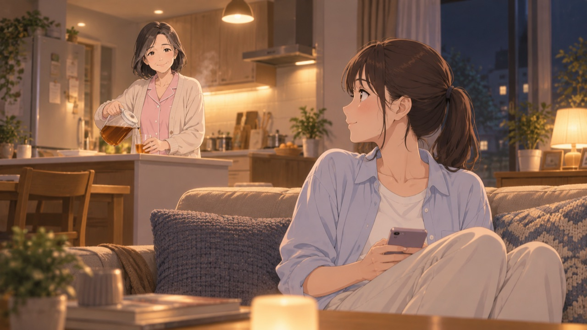
テロップ案｜セリフ字幕のみ
声・セリフ案｜娘：お母さん、最近 機嫌いいね？
見せるもの｜夜のリビング。湯上がりの母が鼻歌で麦茶をつぐ。ソファの娘が顔を上げる。
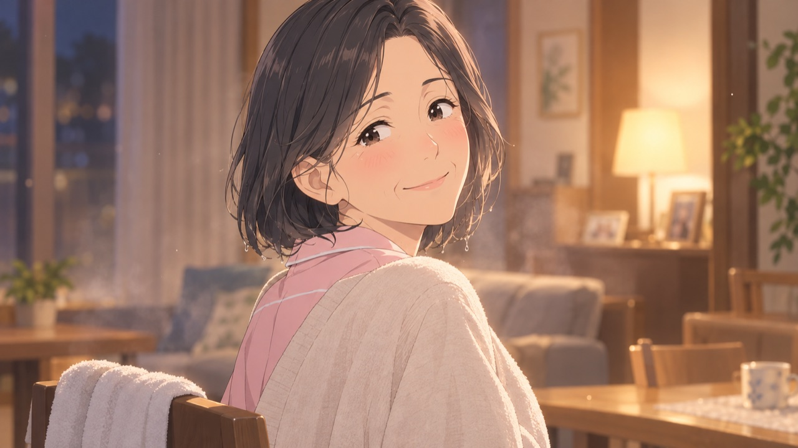
テロップ案｜セリフ字幕のみ
声・セリフ案｜母：ふふ、わかる？
見せるもの｜振り返ってにっこり笑う母のバストアップ。湯上がりでほおが赤い。
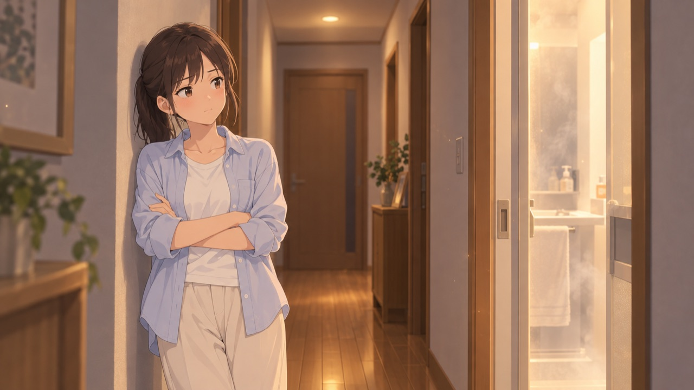
テロップ案｜セリフ字幕のみ
声・セリフ案｜娘：お母さん、最近 お風呂長くない？
見せるもの｜脱衣所の前で、腕を組んで待つ娘。ちょっとあきれ顔。
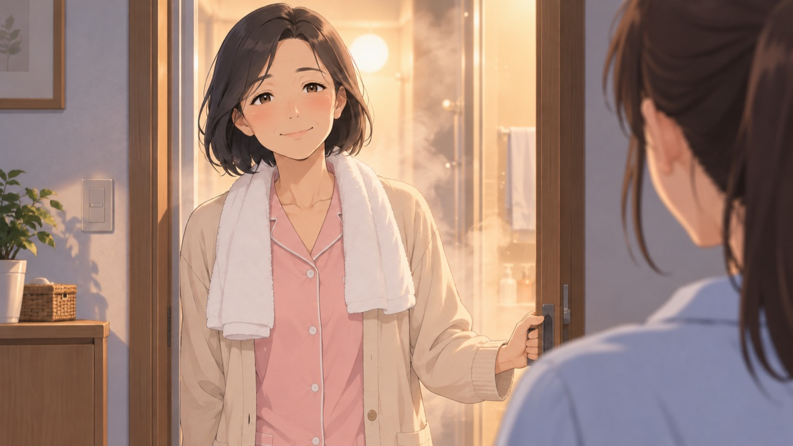
テロップ案｜セリフ字幕のみ
声・セリフ案｜母：だって、楽しみなんだもん。
見せるもの｜タオルを首に、満足そうに出てくる母。湯気がふわっと。
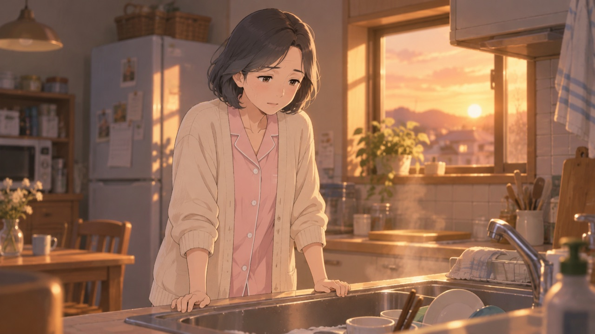
テロップ案｜セリフ字幕のみ
声・セリフ案｜娘：お母さん、最近 ため息多くない？
見せるもの｜夕方の台所。家事の手を止めて小さくため息をつく母。
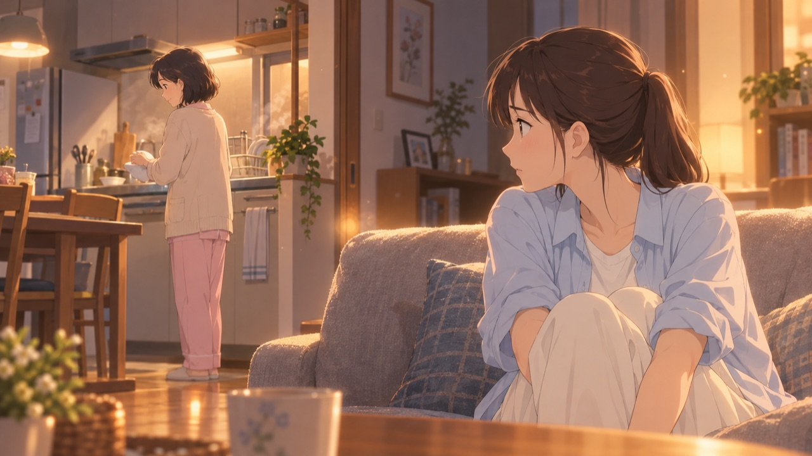
テロップ案｜毎日がんばる、お母さんへ。
声・セリフ案｜母：……そう？
見せるもの｜ソファから、心配そうに母を見る娘。症状ではなく暮らしの様子で描く。
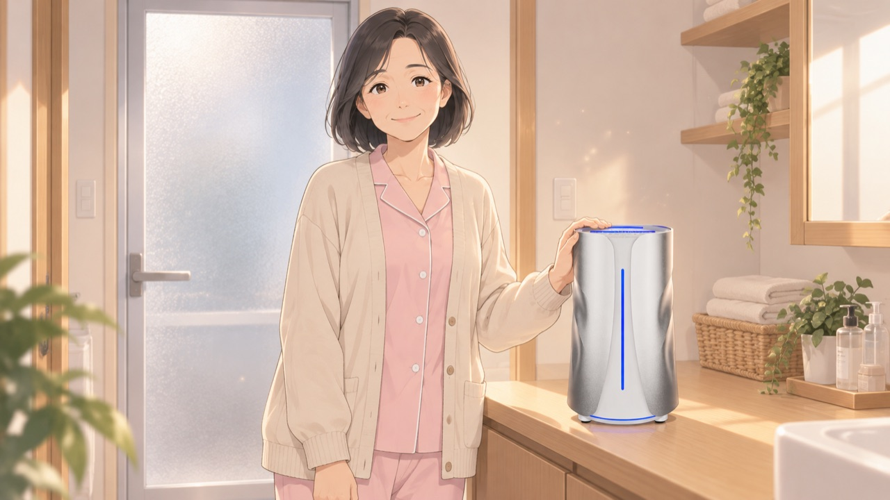
テロップ案｜本体は脱衣所に。
声・セリフ案｜母：実はね、お風呂を水素風呂にしたの。（Cのみ：だから、お風呂を水素風呂にしてみた。）
見せるもの｜脱衣所の木の台に本体。母が手を添えてこちらを見る。浴室の扉で「浴室の外」と分かる。
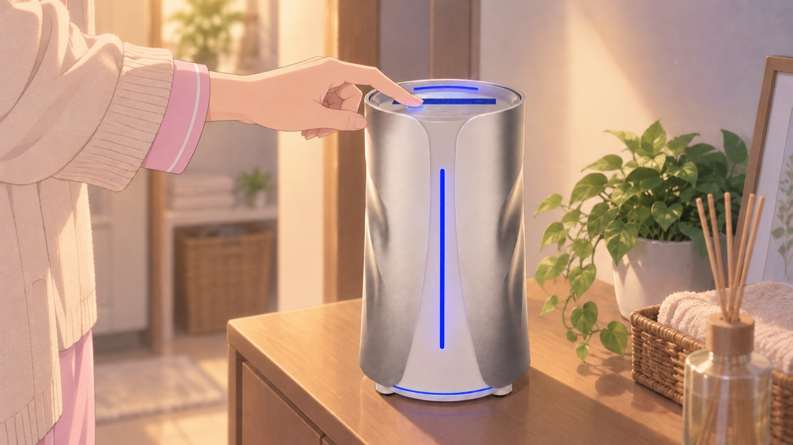
テロップ案｜お湯に入れて、スイッチを押すだけ。
声・セリフ案｜（セリフなし）
見せるもの｜天面のボタンを押す手元。※手の形がまだ不自然（2回修正して直らず）。本番はこのカットを実機の写真・動画に差し替える前提。電極をお湯に入れる場面も、実機の素材を受け取ってから追加（形を創作しない）。
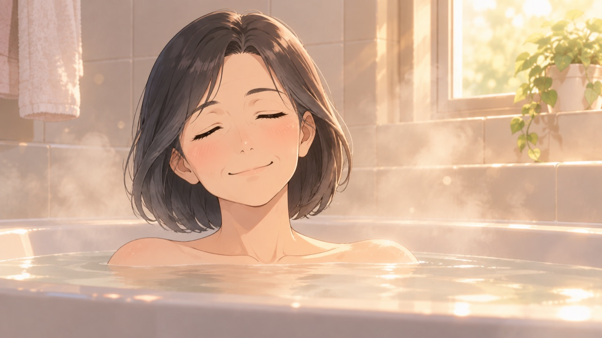
テロップ案｜ぽかぽか、ほっとする。
声・セリフ案｜（セリフなし・BGMのみ）
見せるもの｜湯気の浴室で、目を閉じて肩までつかる母。肩から上だけ。
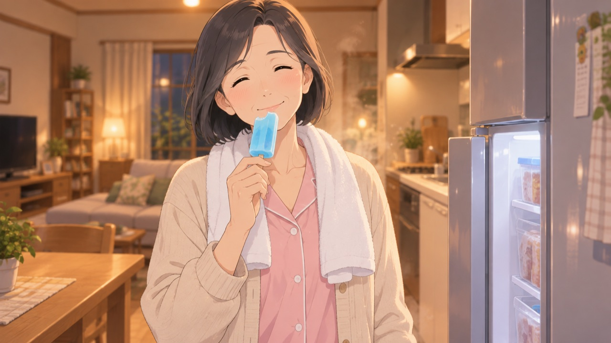
テロップ案｜湯上がりまで、ぽかぽか。
声・セリフ案｜（セリフなし）
見せるもの｜首にタオル、ほおが赤い母がアイスをひと口。※「体温アップ」の言い換え・要確認。
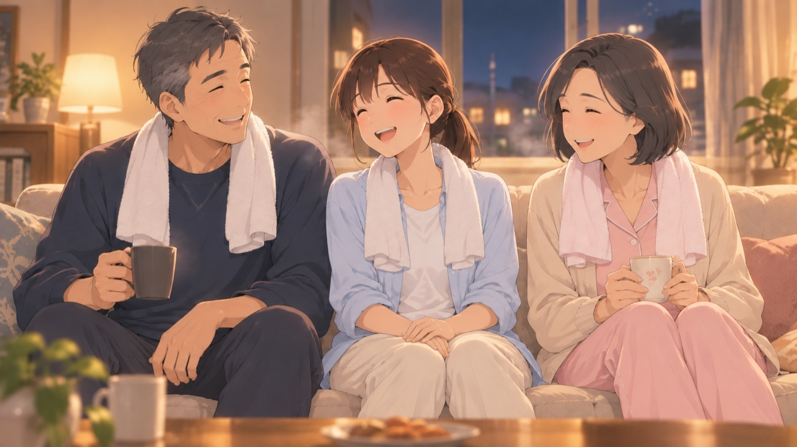
テロップ案｜家族みんなで、同じお湯。
声・セリフ案｜（セリフなし）
見せるもの｜湯上がりの父・娘・母がソファに並んで笑う。
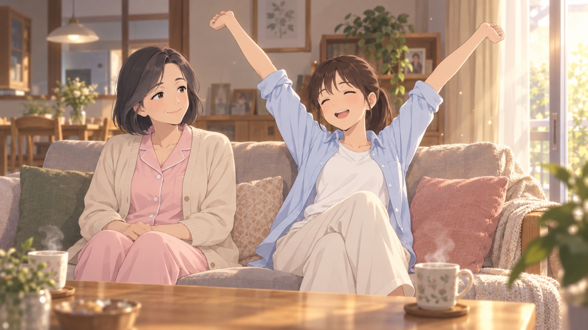
テロップ案｜毎日のお風呂が、待ち遠しくなる。
声・セリフ案｜娘：私も毎日入りたい！／母：でしょ？
見せるもの｜ソファで伸びをする娘と、得意げな母。
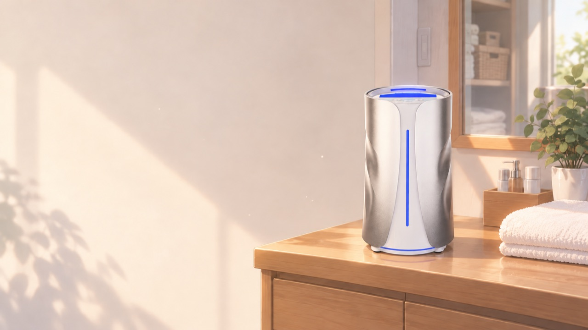
テロップ案｜使い方・料金は、お気軽にご相談ください。
声・セリフ案｜（NA案）まずは、お気軽にご相談ください。
見せるもの｜エンドカード。本体＋［商品名］［販売者名］［問い合わせ先］は確認中のため空欄。